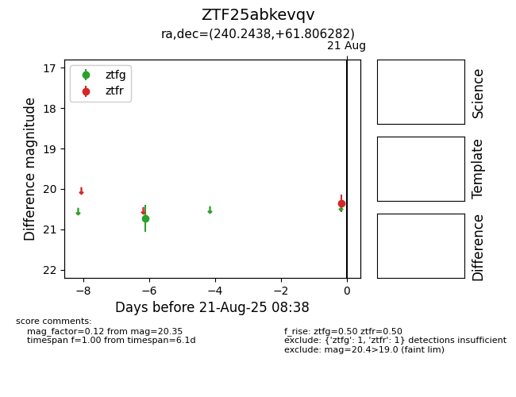

Target ZTF25abkevqv at 2025-08-21 08:38, see:
FINK: fink-portal.org/ZTF25abkevqv
Lasair: lasair-ztf.lsst.ac.uk/objects/ZTF25abkevqv
ALeRCE: alerce.online/object/ZTF25abkevqv
alt names
ZTF25abkevqv (ztf,alerce)
coordinates:
equatorial (ra, dec) = (240.2438,+61.80628)
galactic (l, b) = (94.3634,+43.36003)
photometry
last ztfg=20.73, ztfr=20.35
1 ztfg, 1 ztfr detections
